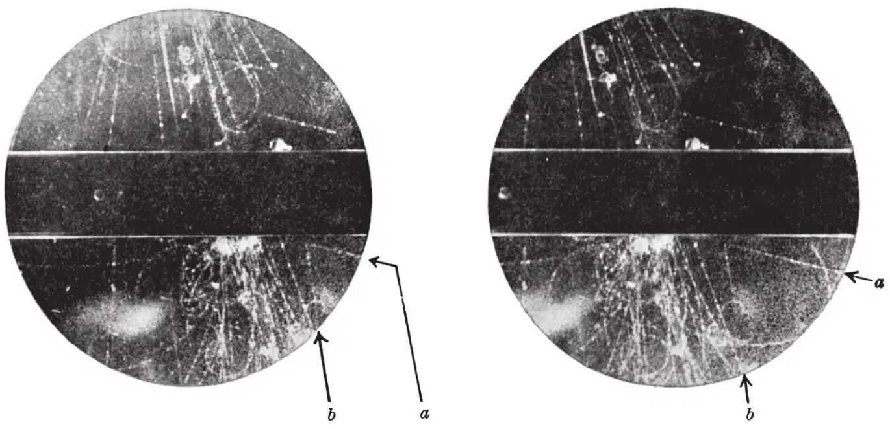
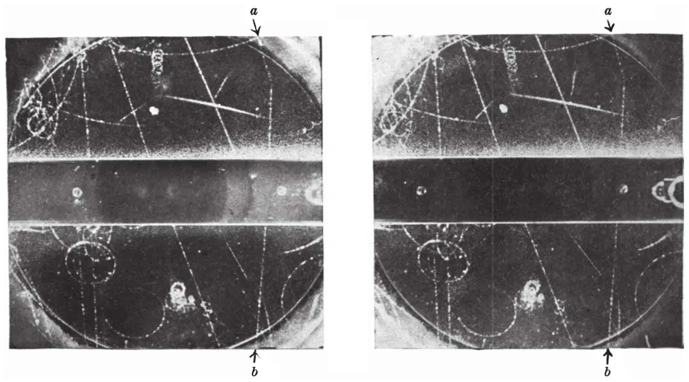
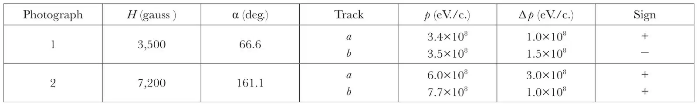
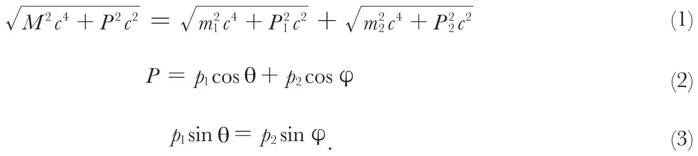
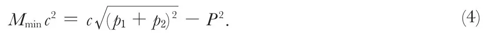
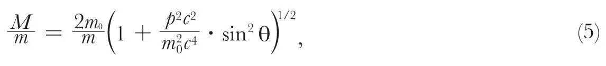
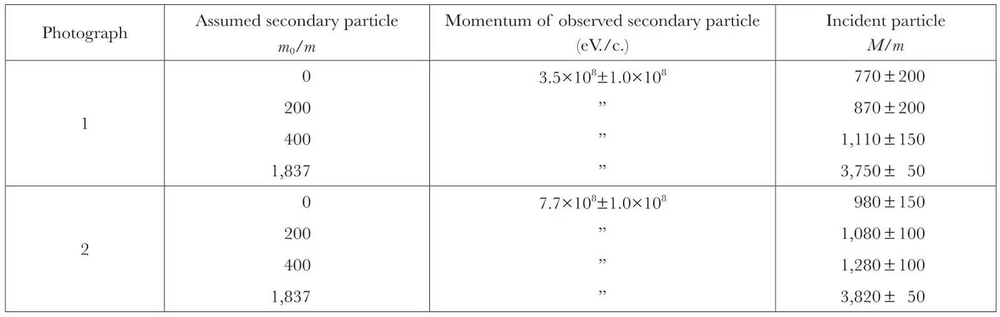
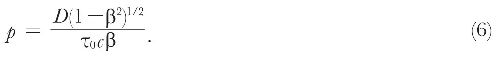

中文
中文G. D. Rochester and C. C. Butler
Editor’s Note
By 1947, physicists knew of the positron and the neutrino, and had recently discovered the neutral pion. A tidy picture of the particle zoo seemed to be emerging, except for some minor confusion concerning the muon. But here physicists George Rochester and Clifford Butler reported shocking evidence for yet further heavy particles of an unknown kind. They analysed photographs of energetic particles penetrating a cloud chamber, and in two cases noted V-like patterns apparently showing one incident massive particle spontaneously disintegrating into two others. These processes would later be identified as involving two new particles, the theta and tau particles: just two of a host of new particles to be discovered over the coming decades. 中文
AMONG some fifty counter-controlled cloud-chamber photographs of penetrating showers which we have obtained during the past year as part of an investigation of the nature of penetrating particles occurring in cosmic ray showers under lead, there are two photographs containing forked tracks of a very striking character. These photographs have been selected from five thousand photographs taken in an effective time of operation of 1,500 hours. On the basis of the analysis given below we believe that one of the forked tracks, shown in Fig. 1 (tracks a and b), represents the spontaneous transformation in the gas of the chamber of a new type of uncharged elementary particle into lighter charged particles, and that the other, shown in Fig. 2 (tracks a and b), represents similarly the transformation of a new type of charged particle into two light particles, one of which is charged and the other uncharged. 中文

Fig. 1. Stereoscopic photographs showing an unusual fork (a b) in the gas. The direction of the magnetic field is such that a positive particle coming downwards is deviated in an anticlockwise direction 中文

Fig. 2. Stereoscopic photographs showing an unusual fork (a b). The direction of the magnetic field is such that a positive particle coming downwards is deviated in a clockwise direction 中文
The experimental data for the two forks are given in Table 1; H is the value of the magnetic field, α the angle between the tracks, p and Δp the measured momentum and the estimated error. The signs of the particles are given in the last column of the table, a plus sign indicating that the particle is positive if moving down in the chamber. Careful re-projection of the stereoscopic photographs has shown that each pair of tracks is copunctal. Moreover, both tracks occur in the middle of the chamber in a region of uniform illumination, the presence of background fog surrounding the tracks indicating good condensation conditions. 中文
Table 1. Experimental data

Though the two forks differ in many important respects, they have at least two essential features in common: first, each consists of a two-pronged fork with the apex in the gas; and secondly, in neither case is there any sign of a track due to a third ionizing particle. Further, very few events at all similar to these forks have been observed in the 3 cm. lead plate, whereas if the forks were due to any type of collision process one would have expected several hundred times as many as in the gas. This argument indicates, therefore, that the tracks cannot be due to a collision process but must be due to some type of spontaneous process for which the probability depends on the distance travelled and not on the amount of matter traversed. 中文
This conclusion can be supported by detailed arguments. For example, if either forked track were due to the deflexion of a charged particle by collision with a nucleus, the transfer of momentum would be so large as to produce an easily visible recoil track. Then, again, the attempt to account for Fig. 2 by a collision process meets with the difficulty that the incident particle is deflected through 19° in a single collision in the gas and only 2.4° in traversing 3 cm. of lead—a most unlikely event. One specific collision process, that of electron pair production by a high-energy photon in the field of the nucleus, can be excluded on two grounds: the observed angle between the tracks would only be a fraction of a degree, for example, 0.1° for Fig. 1, and a large amount of electronic component should have accompanied the photon, as in each case a lead plate is close above the fork. 中文
We conclude, therefore, that the two forked tracks do not represent collision processes, but do represent spontaneous transformations. They represent a type of process with which we are already familiar in the decay of the meson into an electron and an assumed neutrino, and the presumed decay of the heavy meson recently discovered by Lattes, Occhialini and Powell1. 中文
The Masses of the Incident Particles
Let us assume that a particle of mass M and initial momentum P is transformed spontaneously into two particles of masses m1 and m2, momenta p1 and p2 at angles of θ and φ with the direction of the incident particle. Then the following relations must hold:

These general relations may be used to obtain the mass of the incident particle as a function of the assumed messes of the secondary particles. 中文
The value of M must be greater than that obtained by taking the rest masses of the secondary particles as small compared with their momenta; thus the minimum value Mmin is given by the following equation:

Applying this equation to the forked track of Fig. 1, after calculating P from the observed values of p1 and p2, it is found that Mmin is (770±200)m, where m is the mass of the electron. The application of equation (4) to the forked track of Fig. 2, however, after calculating p2 from the observed values of P and p1, shows that Mmin=(1,700±150)m. This value of the mass would require an ionization for the incident particle of twice minimum, which is inconsistent with the observed ionization. We are therefore justified in assuming that the real value of P is greater than the observed value which, as indicated in Table 1, has a large error. If larger values of P are assumed, then Mmin is reduced in value. The lowest value of Mmin is (980±150)m if P is 14.5×108 eV./c. Beyond this value of P the mass increases slowly with increasing momentum. No choice of incident momentum will bring the mass of the incident particle below 980m. 中文
In the special case where the incident particle disintegrates transversely into two particles of equal mass m0, giving a symmetrical fork, equation (1) reduces to the following expression,

where p is the momentum of each of the secondary particles. Some typical results for different assumed secondary particles, calculated from equation (5), are given in Table 2. On the reasonable assumption that the secondary particles are light or heavy mesons, that is, with masses of 200m or 400m, we find that the incident particle in each photograph has a mass of the order of 1,000m. 中文
Table 2. Mass of incident particle as a function of mass of secondary particle

Upper values of the masses of the incident particles may also be obtained from the values of the ionization and the momenta. Thus for each of the observed particles in Fig. 1, the ionization is indistinguishable from that of a very fast particle. We conclude, therefore, that β=v/c ≥ 0.7. Since the momentum of the incident particle may be found from the observed momenta of the secondary particles, we can apply equation (1) to calculate M. In this way we find M/m ≤ 1,600. Again, since the ionization of the incident particle in Fig. 2 is light, β ≥ 0.7, from which it can be shown that M/m ≤ 1,200. This last result, however, must be taken with caution because of the uncertainty in the measured value of the momentum of the incident particle. 中文
One further general comment may be made. This is that the observation of two spontaneous disintegrations in such a small number of penetrating showers suggests that the life-time of the unstable particles is much less than the life-time of the ordinary meson. An approximate value of this life-time may be derived as follows. The probability of an unstable particle of life-time τ0 decaying in a short distance D is given by

Since the total number of penetrating particles in the penetrating showers so far observed is certainly less than 50, we must assume that the number of our new unstable particles is unlikely to have been greater than 50. Since one particle of each type has been observed to decay, we can therefore put p ≈ 0.02. Setting D ≈ 30 cm., and β = 0.7, we find from equation (6) that τ0 = 5.0×10–8 sec. 中文
We shall now discuss possible alternative explanations of the two forks. 中文
Photograph 1. We must examine the alternative possibility of Photograph 1 representing the spontaneous disintegration of a charged particle, coming up from below the chamber, into a charged and an uncharged particle. If we apply the argument which led to equation (4) to this process, it is readily seen that the incident particle would have a minimum mass of 1,280m. Thus the photograph cannot be explained by the decay of a back-scattered ordinary meson. Bearing in mind the general direction of the other particles in the shower, it is thought that assumption of the disintegration of a neutral particle moving downwards into a pair of particles of about equal mass is more probable. Further, it can be stated with some confidence that the observed ionizing particles are unlikely to be protons because the ionization of a proton of momentum 3.5×108 eV./c. would be more than four times the observed ionization. 中文
Photograph 2. In this case we must examine the possibility of the photograph representing the spontaneous decay of a neutral particle coming from the right-hand side of the chamber into two charged particles. The result of applying equation (4) to this process is to show that the minimum mass of the neutral particle would be about 3,000m. In view of the fact that the direction of the neutral particle would have to very different from the direction of the main part of the shower, it is thought that the original assumption of the decay of a charged particle into a charged penetrating particle and an assumed neutral particle is the more probable. 中文
We conclude from all the evidence that Photograph 1 represents the decay of a neutral particle, the mass of which is unlikely to be less than 770m or greater than 1,600m, into the two observed charged particles. Similarly, Photograph 2 represents the disintegration of a charged particle of mass greater than 980m and less than that of a proton into an observed penetrating particle and a neutral particle. It may be noted that no neutral particle of mass 1,000m has yet been observed; a charged particle of mass 990m ± 12 percent has, however, been observed by Leprince-Ringuet and L’héritier2. 中文
Peculiar cloud-chamber photographs taken by Jánossy, Rochester and Broadbent3 and by Daudin4 may be other examples of Photograph 2. 中文
It is a pleasure to record our thanks to Prof. P. M. S. Blackett for the keen interest he has taken in this investigation and for the benefit of numerous stimulating discussions. We also wish to acknowledge the help given us by Prof. L. Rosenfeld, Mr. J. Hamilton and Mr. H. Y. Tzu of the Department of Theoretical Physics, University of Manchester. We are indebted to Mr. S. K. Runcorn for his assistance in running the cloud chamber in the early stages of the work. 中文
(160, 855-857; 1947)
G. D. Rochester and C. C. Butler: Physical Laboratories, University, Manchester.
References:
1. Lattes, C. M. G., Occhialini, G. P. S., and Powell, C. F., Nature, 160, 453, 486 (1947).
2. Leprince-Ringuet, L., and L’héritier, M., J. Phys. Radium.(Sér. 8), 7, 66, 69 (1946). Bethe, H. A., Phys. Rev., 70, 821 (1946).
3. Jánossy, L., Rochester, G. D., and Broadbent, D., Nature, 155, 1 42 (1945). (Fig. 2. Track at lower left-hand side of the photograph.)
4. Daudin, J., Annales de Physique, 11e Série, 19 (Avril-Juin), 1944 (Planche IV, Cliché 16).